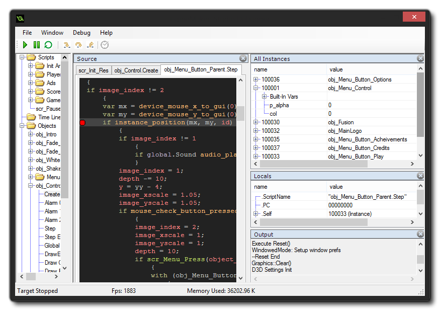
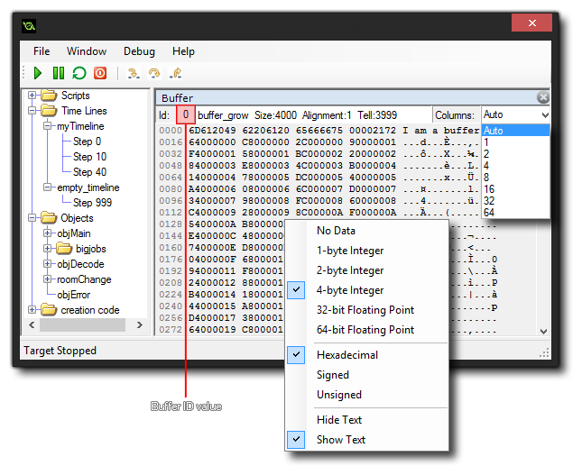
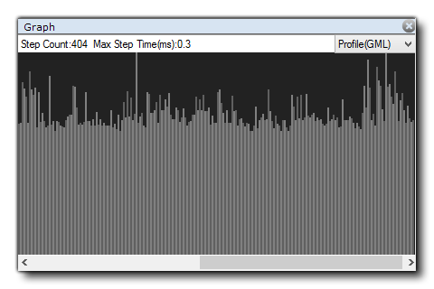
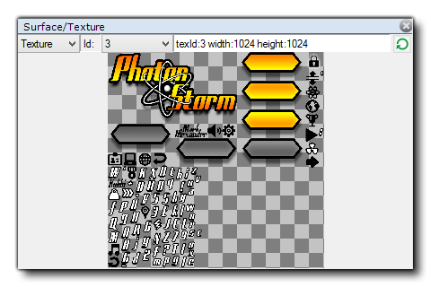

The Debug Module is a powerful tool for checking your game, and is especially useful for tracking down errors and bugs in your code, as well as checking that scripts are run when they should be, and that variables and arrays contain the values you expect etc... You can start the Debug Module by running your game from GameMaker: Studio using the red"Play" button at the top of the IDE, or by going to the Run menu and selecting "Run in Debug Mode".
NOTE: You may be prompted by Windows Firewall (or any other firewall program that you run) to create a security exception for this module. You must do this otherwise it will not work correctly. This is due to the way the Debug Module works and is essential for debugging mobile platforms.
NOTE: On devices the debug module will connect over WiFi automatically, however should you have any configuration issues, you will need to go to the Preferences and switch on "Manual IP Entry". This will then let you specify the IP to connect to manually, which will then be saved for future use.
The actual Debug Module window will look something like this: 
At the top you have four drop down menus:
- File: Here you can attempt to reconnect the debug module to your game should the connection be lost, or exit the debug module (which will not exit your game, only the module).
- Window: This menu contains options for the various sub-windows that you can create for debugging. You can delete them (clear all of them so that you can create a new watch layout), or save the current layout or load a previously saved layout.
- Debug: From here you can pause or play the game being debugged, or you can toggle a breakpoint on or off.
- Help: Opens up your browser, taking you to the YoYo Games Helpdesk.
Apart from these drop down menus, you also have a series of buttons along the top with which you can control certain aspects of your game and the Debug Modules interaction with it. These buttons are:
Play: This starts the game again after it has been paused (hotkey = f5).
Pause: Pauses the game (hotkey = f6).
Restart: Restarts the game.
Step In: Step into a code block or script (hotkey = f11).
Step Over: Step over a code block or script (hotkey = f10).
Step Out: Step out of a code block or script (hotkey = <SHIFT> + f11).
RealTime Updates: Turn on or off (it is off by default) real time updates for the debug information.
The first three buttons are used to control your game,
permitting you to start, stop and pause it at any time. When the
game is paused, you can then use the next three buttons for
"stepping" through your code. This simply means that you can tell
your game to run the current line of code, then step onto the next
one, permitting you to run through your entire game one line of
code at a time should you wish. Normally you would simply use the
Step In button to do this, but you also have one for
stepping over code and one for stepping out of the code. Stepping
over is useful when you have large scripts to run through, as
clicking this will run the whole script or code block as a single
step and stop on the next line afterwards, while stepping out will
take you out of a script (they will run, but all at once) and stop
on the next step. The final icon permits the debug window to update
its data in real time, so you can see how variables change or
instances are created and destroyed as it happens. Note that this
may affect the games performance and that not all information is
available in real time. For example, the Render State watch
cannot be viewed in real time.
The whole idea of the Debug Module is to permit you to "watch" every detail of your game. This is done using "watch windows" which are opened on the right hand side of the debug module. To open a new watch, simply click on an empty area (which should show the text "select window type") or right-click on the top window bar and choose a new "Type".
NOTE: Many of the watch windows (like Global, Local or Watches) will not update while the game is running, and will require that you pause the game or set a breakpoint before they are updated.
You can also split the main watch area into multiple windows using the "Split" option from the top window bar, permitting you to organise the layout to suit your needs (and these layouts can also be saved through the "Window" drop down menu). The type of window that you choose to open will depend on what it is that you wish to watch, with the following options available:
Source
The source window is where you can see the source code for your game, and you can have multiple tabs open in this window, with each tab showing the code from a different instance or event. If you do a right click beside a line of code you can add a Breakpoint to the code (see below for more details on Breakpoints), and doing so again will remove it (you can also use the key <f9>, or the toggle option from the "Debug" drop down menu. If you have this window open, you can also double-click on an event in any instance from the resource tree and it's code will be shown in a new tab.
Globals
The Globals window will show a list of all the currently declared global variables and their values. If you right-click on a value you can set its type (see Data Types, below) to see details of data structures.
Locals
The Locals window shows the current step properties, which includes the name of the current event (or script) being run, the position within the event (PC is "program counter"), the "self" instance running the code block, and the "other" instance in the event. This last part is only ever valid when the event is a collision event or there is a with used in the code. If the instance is in collision, "other" will show the other instance (and it's variables) in the collision, but if it is a with then the "Self" instance becomes that which is running the code, while "Other" is then the instance that actually contains the with. At all other times, "other" will simply show the same data as "Self". After all this information, you will then find a list of all local variables that are currently declared for the code block being stepped through. If you right-click on a value you can set its type (see Data Types, below) to see details of data structures.
Watches
This window is for you to add a specific variable that you want to keep track of. This can be a global or instance scope variable, a built in variable or even an array or data structure. If the the instance code being stepped through has the watched variable it will be shown here, meaning you can easily keep track of a value without having to search for it in the Locals or Globals windows. If you right-click on a value you can set its type (see Data Types, below), delete it or clear all watches from the window. You can also change some of the values for the variables shown by simply double-clicking on the value and giving it a new one. Note that you cannot re-asign arrays or data structures in this way, but you can change some of their contents (you cannot change the "key" values in maps, nor the priority value for priority queues).
Instance
As the name implies, this window will show all instance variables, local variables and built in variables associated with the instance currently being stepped through in the Source window (if an instance is being referenced using the keyword "other" or the with statement, then this window will show that instances properties instead).
Output
This window simply shows the output of the compiler (as shown in the main IDE compiler window). If you right-click on the window you can clear it or copy its contents to the clipboard.
All Instances
Should you need to see all instances that are currently in the room, you can select this window and they will be listed. You can also see the state of any built in or instance variables that they have, and you can right-click on a value to set its type (see Data Types, below)
Selected Instance
This window is for when you select an instance from your game. This is done by simply pausing the game and then clicking on any visible instance within the game window. The instance found beneath the mouse cursor will then have its information displayed in the Selected Instance window, where you can see it's built in and instance variables, the same as for the Instances window.
Call Stack
This window will display the current call stack of events, as well as the line number for the code being stepped through.
Buffer
If you have initialised any buffers in your game, then this window will show you the buffer data. You can select any buffer created by setting the Buffer ID value, which will start at 0 for the first buffer created in your game, and increment by 1 for each consecutive buffer.  If you right-click on the data window, you can select how the data is displayed, setting the alignment and type, and you can also set how the data is laid out from the Columns box. There is a drop-down window here where you can select from a default list of layouts, or you can click the box and input your own value. Note that for large buffers, scrolling down through the data will require that you scroll, then release the mouse button for the Debug Module to fetch and display the required data.
Profile
This window is where you can see the current system profile for the game being tested where you can check everything in your game from whole events to individual function calls to see how they are performing and spot any trouble areas or bottlenecks. For further information on profiling see the section below:
Graph
The Graph window shows you a graphic display of how your game is performing. You can see the memory use, or how the GML is performing on the CPU, or a combination of both. You can change views easily by clicking the drop-down tab on the right and selecting the option you require. 
Render States
This watch shows you all the information available for the state of the current frame being rendered, like the draw alpha or fill colour. this cannot be updated in real time so you will need to pause the game to get and update the frame details.
Surfaces/Textures
This watch enables you to see exactly what is being drawn to any surfaces you have in your game (including the application surface) as well as see the texture pages that are in memory. You can select from textures or surfaces from the top of the watch, and then select the texture or surface ID to have it displayed in the window. 
It is important to note that while the game is running it
doesn't update the debug windows with variable values and other
details by default, therefore you must first use the "Pause"
button in the Debug Module to pause the game before Locals, Globals
and other data will be available, or enable real-time updating from
the icons at the top. The only exception to this rule is the
Profile view, which updates in real time when enabled
independently of the real-time switch, as it has its own on/off
button.
When you are watching a variable in any of the windows, it can
be one of multiple data-types. However, due to the way that
GameMaker: Studio stores certain things, the Debug Module
does not always know just what the variable holds. This is because
the internal ID values for data structures or instances are
integers and so the Debug Module doesn't always know if the integer
value being stored in a variable is for a data structure or an
instance or is simply an integer value. For that reason, you can
right-click on any variable value and get a pop-up window
that lists the available data-types that this variable could be.
Strings and arrays do not permit this option, and it is worth
noting that even if a data structure is stored in an instance
variable, its ID number is global, so if you have four
instances and each one creates a ds_list (for example), each list
will have an id from 0 to 3, and they won't all be 0.
Once you have selected your data-type, the variable will then show
the entries in the structure simply by clicking the small "+" next
to its name. This will expand the structures contents, and, in the
case of the "Watches" window, permit you to modify them too.
A breakpoint is a place in your game code that you wish it to
stop at so you can see what's going on. With the Debug Module, you
can set these at any time and in any code block, and you can also
set them from the GameMaker: Studio IDE. When making your
game, they can be added at any time using f9 (or using the
right mouse button and selecting "toggle breakpoint"), either on an
action in the object window, or on a line in a code editor window.
Now, when you run your game in debug mode it will pause at the
point (or points) that you have defined. Breakpoints set from the
IDE are saved along with your game and persist over various runs,
however if you add a breakpoint to your code in the Debug Module,
this will be lost after the module is closed, or a new test run
started.